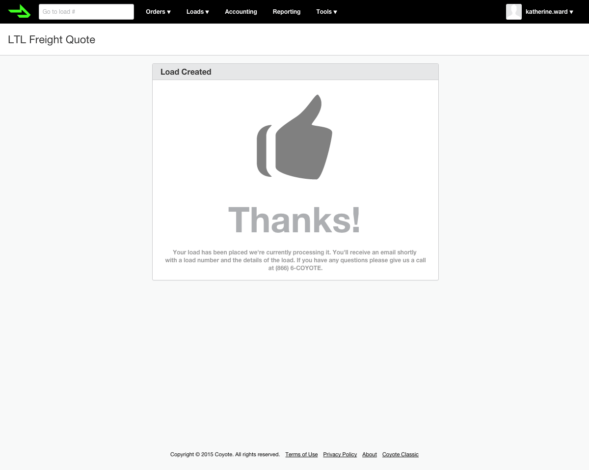
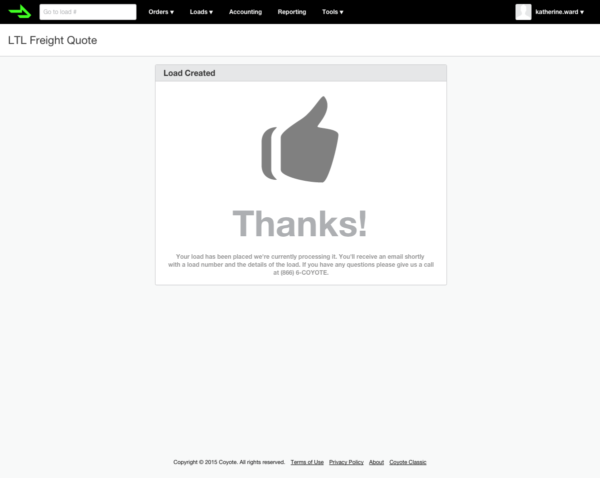

There's various types of shipping within the 3PL industry and Coyote was missing out big on one of them: Less than truckload shipping (LTL). Coyote needed a tool to give shippers quotes and allow them to book LTL freight.
Paper & Pen Sketches
This phase of the design process revealed the most about the type of project, and the stakeholders we were working with. Even though the business had a tight timeline of 3 months for development and release, walking stakeholders through paper and pen sketches exposed the lack of knowledge and unified vision for this tool. As this phase tends to do, it forced all parties involved to come to a conclusion on what would be, and most importantly what wouldn't be part of this tool. It was here that a quick quote tool for unauthorized users was split from this project and is now planned as a follow-up feature.


Moqups
Developing mockups and sharing them with stakeholders was the best way to get form field requirements for this project. Unfortunetely that meant that this stage of the process took far longer than expected. This tool was built to utilize an external API for gathering and presenting quotes from carriers to shippers. There were a lot of unknowns and discoverings along the way that added, moved, and removed fields from our form.
We settled on a wizard-like interface quickly, but what fields needed to be answered at what step changed constantly as the development team learned more about the API. While the development team explored and defined the API requirements, I designed many different versions of the timeline and form steps and user tested these to make decisions based on usability.


Early Designs
Initially I designed a final step that combined pickup and delivery details with the shipment summary. During user testing this proved to be quite confusing so I broke up the steps into a more traditional process with one of these sections displayed at a time.
This first design also featured a slightly different, unrefined version of the timeline. Although the final traversable timeline isn't immediately discoverable, it was even less so during user testing so I redesigned this element as well.

Production
Once the API requirements had been resolved, the Pune team built out a rough, working version of the wizard which I later refined and added subtle animations to. I also ran a few user tests and revealed a usability issues regarding shipping to an already saved address verse creating a new one which was worked out.
The tool was released to a limited beta group and later to all of Coyote's shippers. It's now being used hundreds of times daily and the follow-up quick quote tool is now being built.


 
